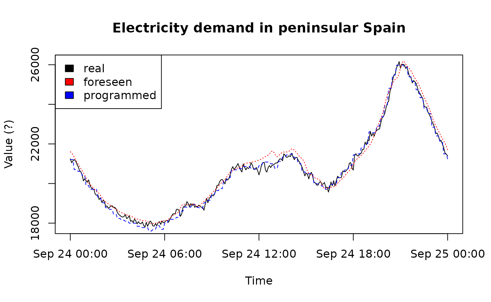

RESIOS
To retrieve data you need to ask for it via email. You can find the official help page for the API with many examples.
Once you get the token I recommend to save it in your .Renviron file (if you only will use R to retrieve data)
get_token()
ea <- esios_archives()
head(ea)
#> name id horizon archive_type
#> 1 REE_BalancingEnerBids 181 QM csv
#> 2 Resultado_Subasta_Mensual_POR 159 M xls
#> 3 Resultado_Subasta_Anual_POR 160 A xls
#> 4 Resultado_Subasta_Trimestral_POR 161 T xls
#> 5 Espec_Subasta_Trimestral_EP 149 T pdf
#> 6 Espec_Subasta_Trimestral_PE 150 T pdf
#> download.name
#> 1 REE_BalancingEnerBids
#> 2 Resultado_Subasta_Mensual_POR
#> 3 Resultado_Subasta_Anual_POR
#> 4 Resultado_Subasta_Trimestral_POR
#> 5 Espec_Subasta_Trimestral_EP
#> 6 Espec_Subasta_Trimestral_PE
#> download.url
#> 1 https://esios /archives/181/download?date=2023-09-25T23%3A59%3A59T%2B0200&locale=es
#> 2 https://esios /archives/159/download?date=2023-09-25T23%3A59%3A59T%2B0200&locale=es
#> 3 https://esios /archives/160/download?date=2023-09-25T23%3A59%3A59T%2B0200&locale=es
#> 4 https://esios /archives/161/download?date=2023-09-25T23%3A59%3A59T%2B0200&locale=es
#> 5 https://esios /archives/149/download?date=2023-09-25T23%3A59%3A59T%2B0200&locale=es
#> 6 https://esios /archives/150/download?date=2023-09-25T23%3A59%3A59T%2B0200&locale=es
#> date date_time1 date_time2 publication_date
#> 1 2023-09-25 23:59:59 <NA> <NA> 2023-09-25
#> 2 2023-09-25 23:59:59 <NA> <NA> 2023-08-24
#> 3 2023-09-25 23:59:59 <NA> <NA> 2022-12-15
#> 4 2023-09-25 23:59:59 <NA> <NA> 2023-06-08
#> 5 2023-09-25 23:59:59 <NA> <NA> 2023-06-06
#> 6 2023-09-25 23:59:59 <NA> <NA> 2023-06-06
#> taxonomy_terms
#> 1 156, 165, 178, Mercados y precios, Descargas, Regulación Terciaria, 20, 21, 22
#> 2 156, 165, 182, Mercados y precios, Descargas, Subastas explícitas, 20, 21, 22
#> 3 156, 165, 182, Mercados y precios, Descargas, Subastas explícitas, 20, 21, 22
#> 4 156, 165, 182, Mercados y precios, Descargas, Subastas explícitas, 20, 21, 22
#> 5 156, 165, 182, Mercados y precios, Descargas, Subastas explícitas, 20, 21, 22
#> 6 156, 165, 182, Mercados y precios, Descargas, Subastas explícitas, 20, 21, 22Besides the archives you can get daily data from the more than 1900 indicators available:
ei_df <- esios_search_indicators()
#> Waiting 5s to retry ■■■■■■
#> Waiting 5s to retry ■■■■■■■■■■■■
#> Waiting 5s to retry ■■■■■■■■■■■■■■■■■■■■■■■■■■■■■■
#> Waiting 5s to retry ■■■■■■■■■■■■■■■■■■■■■■■■■■■■■■■
dim(ei_df)
#> [1] 1908 5
head(ei_df)
#> name
#> 1 Generación programada PBF Hidráulica UGH
#> 2 Generación programada PBF Hidráulica no UGH
#> 3 Generación programada PBF Turbinación bombeo
#> 4 Generación programada PBF Nuclear
#> 5 Generación programada PBF Hulla antracita Anexo II RD 134/2010
#> 6 Generación programada PBF Hulla sub-bituminosa Anexo II RD 134/2010
#> description
#> 1 <p>Es el programa de energía diario, con desglose horario, de las diferentes Unidades de Programación correspondientes a ventas y adquisiciones de energía en el sistema eléctrico peninsular español. En concreto este indicador se refiere a las unidades de programación con tipo de producción hidráulica UGH.</p><p>Este programa es establecido por el OS a partir de la casación del OM y de las nominaciones de programas de todas y cada una de las Unidades de Programación que le han sido comunicadas por los sujetos titulares de dichas Unidades de Programación, incluyendo las correspondientes a la ejecución de contratos bilaterales con entrega física de los cuales se ha confirmado la ejecución.</p><p><b>Publicación:</b> diariamente a partir de las 13:45 horas con la información del día D+1.</p>
#> 2 <p>Es el programa de energía diario, con desglose horario, de las diferentes Unidades de Programación correspondientes a ventas y adquisiciones de energía en el sistema eléctrico peninsular español. En concreto este indicador se refiere a las unidades de programación con tipo de producción hidráulica no UGH.</p><p>Este programa es establecido por el OS a partir de la casación del OM y de las nominaciones de programas de todas y cada una de las Unidades de Programación que le han sido comunicadas por los sujetos titulares de dichas Unidades de Programación, incluyendo las correspondientes a la ejecución de contratos bilaterales con entrega física de los cuales se ha confirmado la ejecución.</p><p><b>Publicación:</b> diariamente a partir de las 13:45 horas con la información del día D+1.</p>
#> 3 <p>Es el programa de energía diario, con desglose horario, de las diferentes Unidades de Programación correspondientes a ventas y adquisiciones de energía en el sistema eléctrico peninsular español. En concreto este indicador se refiere a las unidades de programación con tipo de producción turbinación bombeo.</p><p>Este programa es establecido por el OS a partir de la casación del OM y de las nominaciones de programas de todas y cada una de las Unidades de Programación que le han sido comunicadas por los sujetos titulares de dichas Unidades de Programación, incluyendo las correspondientes a la ejecución de contratos bilaterales con entrega física de los cuales se ha confirmado la ejecución.</p><p><b>Publicación:</b> diariamente a partir de las 13:45 horas con la información del día D+1.</p>
#> 4 <p>Es el programa de energía diario, con desglose horario, de las diferentes Unidades de Programación correspondientes a ventas y adquisiciones de energía en el sistema eléctrico peninsular español. En concreto este indicador se refiere a las unidades de programación con tipo de producción nuclear.</p><p>Este programa es establecido por el OS a partir de la casación del OM y de las nominaciones de programas de todas y cada una de las Unidades de Programación que le han sido comunicadas por los sujetos titulares de dichas Unidades de Programación, incluyendo las correspondientes a la ejecución de contratos bilaterales con entrega física de los cuales se ha confirmado la ejecución.</p><p><b>Publicación:</b> diariamente a partir de las 13:45 horas con la información del día D+1.</p>
#> 5 <p>Es el programa de energía diario, con desglose horario, de las diferentes Unidades de Programación correspondientes a ventas y adquisiciones de energía en el sistema eléctrico peninsular español. En concreto este indicador se refiere a las unidades de programación con tipo de producción Hulla antracita Anexo II RD 134/2010.</p><p>Este programa es establecido por el OS a partir de la casación del OM y de las nominaciones de programas de todas y cada una de las Unidades de Programación que le han sido comunicadas por los sujetos titulares de dichas Unidades de Programación, incluyendo las correspondientes a la ejecución de contratos bilaterales con entrega física de los cuales se ha confirmado la ejecución.</p><p><b>Publicación:</b> diariamente a partir de las 13:45 horas con la información del día D+1.</p>
#> 6 <p>Es el programa de energía diario, con desglose horario, de las diferentes Unidades de Programación correspondientes a ventas y adquisiciones de energía en el sistema eléctrico peninsular español. En concreto este indicador se refiere a las unidades de programación con tipo de producción Hulla sub-bituminosa Anexo II RD 134/2010.</p><p>Este programa es establecido por el OS a partir de la casación del OM y de las nominaciones de programas de todas y cada una de las Unidades de Programación que le han sido comunicadas por los sujetos titulares de dichas Unidades de Programación, incluyendo las correspondientes a la ejecución de contratos bilaterales con entrega física de los cuales se ha confirmado la ejecución.</p><p><b>Publicación:</b> diariamente a partir de las 13:45 horas con la información del día D+1.</p>
#> short_name id renew
#> 1 Hidráulica UGH 1 13:45
#> 2 Hidráulica no UGH 2 13:45
#> 3 Turbinación bombeo 3 13:45
#> 4 Nuclear 4 13:45
#> 5 Hulla antracita RD 134/2010 5 13:45
#> 6 Hulla sub-bituminosa RD 134/2010 6 13:45Some of them are really interesting, like the price per MWh
ei <- esios_pvpc()
#> Waiting 6s to retry ■■■■■■■■■■■■■
#> Waiting 6s to retry ■■■■■■■■■■■■■■■■■■■■■■■■■■■■
#> Waiting 6s to retry ■■■■■■■■■■■■■■■■■■■■■■■■■■■■■■■
library("ggplot2")
ggplot(ei) +
geom_path(aes(tz_time, value, col = geo_name, linetype = geo_name)) +
theme_minimal() +
labs(y = "€/MWh", x = "Hour", title = "Price per time",
col = "Region", linetype = "Region") +
scale_y_continuous(sec.axis = sec_axis(trans = function(x){x/1000}, name = "€/KWh",
labels = scales::label_number(accuracy = 0.01, suffix = "€"))) +
scale_x_datetime(date_breaks = "4 hours", date_labels = "%H") +
theme(legend.position = "bottom", legend.direction = "horizontal")
REE
You can also query the Red Electrica Española which have also very interesting data.
rc0 <- ree_call(widget = "demanda-tiempo-real", category = "demanda")
#> Last updated: 2023-09-25 00:00:00
plot(rc0$`Demanda real`$datetime, rc0$`Demanda real`$value, type = "l", pch = 2,
main = "Electricity demand in peninsular Spain",
xlab = "Time", ylab = "Value (?)")
lines(rc0$`Demanda programada`$datetime, rc0$`Demanda programada`$value,
type = "l", col = "blue", lty = 2)
lines(rc0$`Demanda prevista`$datetime, rc0$`Demanda prevista`$value,
type = "l", col = "red", lty = 3)
abline(h = Sys.time(), col = "black")
legend("topleft", legend = c("real", "foreseen", "programmed"),
fill = c("black", "red", "blue"))